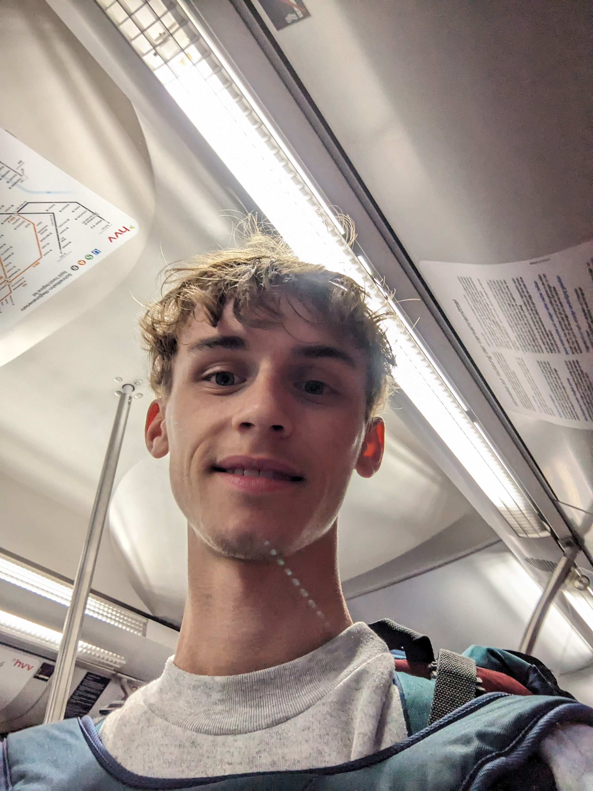

June 2024 – Present

Peter Tallosy
Building high-performance solutions & applying physics to real-world problems.
Physics undergraduate skilled in mathematics, physics, and algorithm development. Built software for a Raspberry Pi–based EEG emulator, performed advanced astronomical image processing, and developed ML solutions for urban traffic optimization. Contributed to mesh, a collaborative environment that fosters a vibrant community. Spent 8 years in Austria, mastering German and fueling my passion for math and physics.
Outside of academics, I like to run 5Ks, and find inspiration in Dostoevsky's literary works. My daily routine includes brewing coffee and yerba mate. I'm also interested in health related research. I like to listen to electronic music like Marsh and Air.